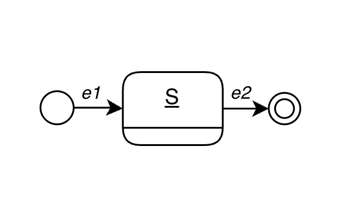
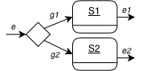
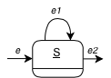

| Sequential | Parallel | Conditional | Loop |
|---|---|---|---|
| From initial to final state following triggered events | Fork pseudostate | Choice pseudostate | Transition cycles |
|  |  |
 |  |
| When e1 is triggered, state S remains active until e2 is triggered | The fork pseudostate splits the incoming transition into two transitions, activating S1 and S2 | If g1 is true, S1 is executed; otherwise if g2 is true, S2 is executed | S remains active until e1 is triggered |